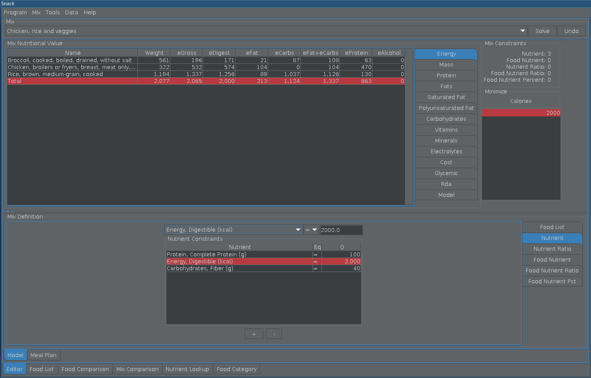
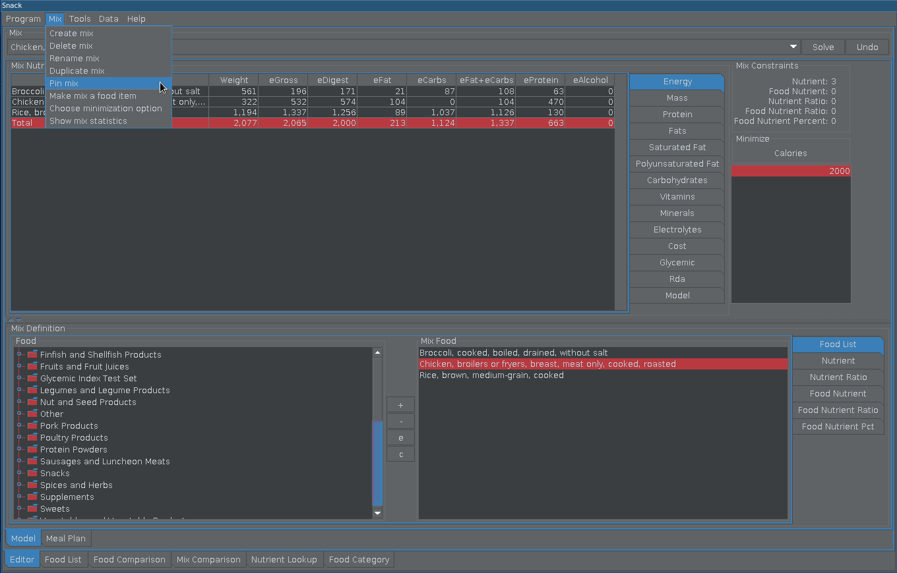
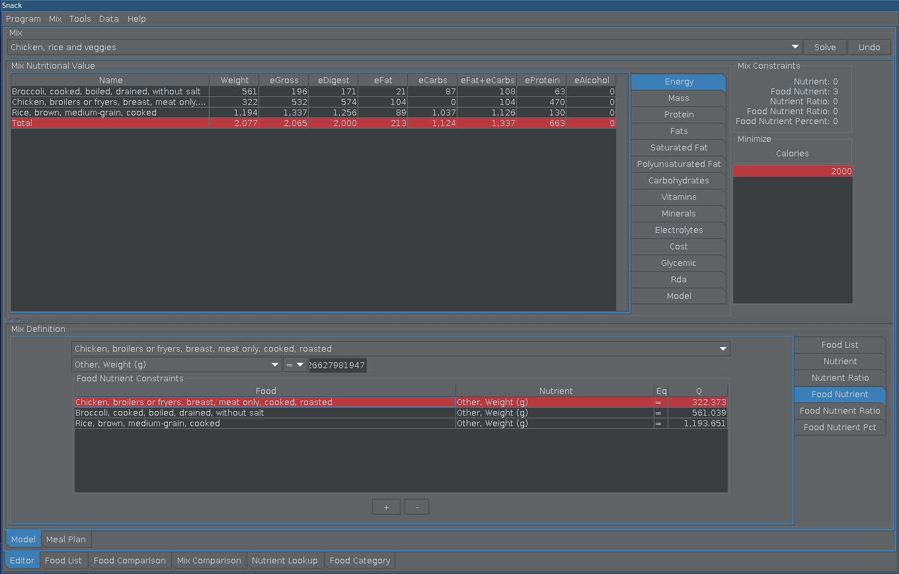

Pin Diet¶

These are the nutrient constraints which will be converted to food nutrient constraints through pinning¶

Pinning a diet fixes you solution, results and quantities by converting all constraints to food nutrient constraints¶

These are the new food nutrient constraints.¶